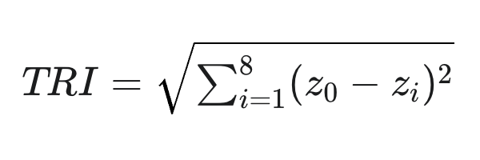
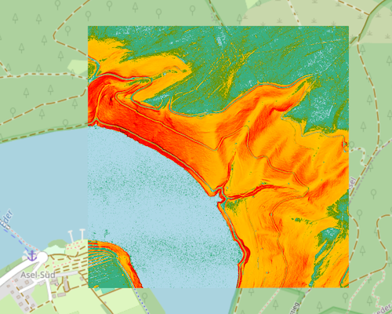

TRI - Terrain Ruggedness Index (Quantifizierung der Oberflächentextur)
Der Terrain Ruggedness Index (TRI) ist ein Maß, das die "Textur" oder "Welligkeit" der Geländeoberfläche quantifiziert. Er berechnet für jeden Punkt die durchschnittliche absolute Höhenänderung zu seinen direkten Nachbarpunkten. Für den allgemeinen Nutzer ist der TRI ein Indikator dafür, wie uneben oder zerfurcht das Gelände ist, unabhängig von der allgemeinen Steilheit: Ein hoher TRI-Wert (dunkle Farbe) zeigt ein raues, heterogenes Gelände an (z.B. Blockfelder, stark erodierte Bereiche), während ein niedriger Wert (helle Farbe) eine ebene oder glatte Oberfläche kennzeichnet (z.B. Ackerflächen, Plateaus). In Verbindung mit hochauflösenden DGM1-Höhendaten ermöglicht der TRI sehr detaillierte Einblicke in die Geländebeschaffenheit. Zu den wichtigsten Anwendungsbereichen gehören:
- Analyse von Oberflächentextur und Rauheit: Mit DGM1-basierten TRI-Werten lassen sich kleinste morphologische Strukturen wie Erosionsrinnen, Terrassenkanten oder subtile Verwerfungen präzise abgrenzen. Dies ist entscheidend für die detaillierte Gefahrenanalyse von Steinschlag oder Murgängen.
- Ökologie und Habitatmodellierung: Die Oberflächenrauigkeit beeinflusst das Mikroklima und die Standortbedingungen für Pflanzen und Tiere. Der TRI aus DGM1-Daten kann kleinräumige Habitate, wie sie für bestimmte Insekten-, Amphibien- oder Pflanzenarten wichtig sind, identifizieren.
- Hydrologie und Erosionsmodellierung: Die Rauheit des Geländes beeinflusst den Oberflächenabfluss und die Bodenerosion. Ein hochauflösender TRI ermöglicht eine genauere Modellierung von Abflussgeschwindigkeiten und potenziellen Erosionsherden.
- Bau- und Infrastrukturplanung: Bei der Planung von Infrastruktur wie Straßen oder Leitungen können durch die detaillierte Analyse unebene und kostenintensive Bereiche exakt identifiziert und umgangen werden.
- Land- und Forstwirtschaft: Die Befahrbarkeit von Flächen mit Maschinen und die Planung von Rückewegen können optimiert werden, indem sehr raue oder steile Kleinstrukturen erkannt werden.
- Archäologie: Mit dem TRI aus DGM1-Daten können minimale, von Menschen geschaffene Reliefveränderungen wie alte Ackerterrassen, Wallanlagen oder Fundamentreste sichtbar gemacht werden, die am Boden kaum noch zu erkennen sind.
Wichtig: Der TRI bewertet die Oberflächentextur und -heterogenität, unabhängig von der allgemeinen Hangneigung. Eine flache Ebene kann rau sein, also viele kleine Unebenheiten aufweisen, während ein steiler Hang glatt sein kann.
Berechnungsgrundlage (Riley-Algorithmus)
Der Terrain Ruggedness Index (TRI) basiert auf der Methode von Riley et al. (1999) und quantifiziert die Geländerauheit, indem er den Höhenunterschied zwischen einem zentralen Pixel und seinen acht direkten Nachbarpixeln misst. Die Formel lautet:
TRI-Algorithmus nach Riley.
Dabei ist z₀ die Höhe der zentralen Zelle und zᵢ sind die Höhe der acht umgebenden Zellen.
Ein TRI-Wert von 0 indiziert eine vollkommen ebene Fläche, bei der alle neun verglichenen Pixel die gleiche Höhe aufweisen. Mit zunehmender Rauheit und Steilheit des Geländes steigen die TRI-Werte an.
Beispielberechnungen für einen Ausschnitt von 3x3 Punkten
| 10.1 m | 10.0 m | 10.1 m |
| 10.0 m | 10.0 m | 10.0 m |
| 10.1 m | 10.0 m | 10.1 m |
TRI = 0.2 (charakterisiert ein nahezu flaches Gelände)
| 10.8 m | 10.9 m | 10.8 m |
| 10.4 m | 10.5 m | 10.4 m |
| 10.1 m | 10.0 m | 10.1 m |
TRI = 0.96 (charakterisiert eine leicht unebene, geneigte Fläche)
| 12.1 m | 12.0 m | 11.8 m |
| 11.9 m | 10.5 m | 9.5 m |
| 11.5 m | 9.1 m | 8.9 m |
TRI = 3.87 (charakterisiert eine signifikante Geländerauheit)
Typische Landschaften
| Beschreibung | Charakteristika und Beispiele | Lage in Deutschland |
|---|---|---|
| Eben bis minimal uneben |
Sehr glatte Oberflächen, kaum wahrnehmbare Höhendifferenzen.
Beispiele: Flussauen, sehr große Ackerflächen, große Parkplätze, Sportplätze, Seen/Wasseroberflächen (wenn in den DGM-Daten vorhanden). |
Elbtalaue (z.B. Brandenburg, Sachsen-Anhalt, Niedersachsen), Teile der Lüneburger Heide (Niedersachsen), Rheinebene (z.B. Baden-Württemberg, Rheinland-Pfalz), Bodensee-Uferbereiche (Baden-Württemberg). |
| Leicht uneben / geringe Rauheit |
Leichte, aber spürbare Höhendifferenzen, fein texturiert.
Beispiele: Sanfte Hügel, Ackerflächen mit feiner Bodenbearbeitung, große Rasenflächen, leicht unebene Wege, subtile Geländewellen. |
Brandenburg (abseits der Auen), Münchner Schotterebene (Bayern), Teile des Kraichgaus (Baden-Württemberg), Niederrheinische Bucht (Nordrhein-Westfalen). |
| Mäßig uneben / moderate Rauheit |
Deutlich wahrnehmbare Unebenheiten und lokale Geländeformen, anstrengend beim Begehen.
Beispiele: Waldgebiete mit moderatem Unterholz und Wurzelstöcken, kleinere Felsbrocken, leicht erodierte Bereiche, kleinere Gräben, Dämme, kleinteilige städtische Bereiche (z.B. alte Stadtkerne mit Treppen, Absätzen). |
Mittelgebirgsvorländer (z.B. Schwarzwaldrand, Harzvorland, Erzgebirgsvorland), Schwäbische Alb (Baden-Württemberg), Teile des Sauerlands (Nordrhein-Westfalen). |
| Ausgeprägt uneben / hohe Rauheit |
Starke lokale Höhenunterschiede, markante Geländeformen, erfordert Trittsicherheit.
Beispiele: Gebiete mit vielen großen Felsbrocken, Blockhalden, stark erodierten Hängen, komplexes Waldgelände mit Windwürfen, kleinere felsige Aufschlüsse, ausgeprägte Gräben, Böschungen von Baugruben und kleineren Steinbrüchen. |
Sächsische Schweiz (Sachsen), Teile des Harzes (Sachsen-Anhalt, Niedersachsen), Bayerischer Wald (Bayern), Eifel (Rheinland-Pfalz). |
| Extrem rau und komplex |
Maximale lokale Zerklüftung, abrupte Höhenwechsel, oft vertikale oder überhängende Formen.
Beispiele: Steile Felswände, massive Blockschuttfelder, tiefe, enge Schluchten, Klippen, aktive Steinbruchbereiche, sehr steile künstliche Abbruchkanten (Autobahnen, große Bauwerke). |
Alpen (Bayerische Alpen, z.B. Wettersteingebirge, Berchtesgadener Alpen), Große aktive Steinbrüche (bundesweit), Schluchten in Mittelgebirgen (z.B. Partnachklamm, Höllentalklamm in den Alpen, Wutachschlucht im Schwarzwald). |
Wertebereich zu Farbe
Aus den Höheninformationen werden TRI-Werte errechnet. Zusätzlich definiert der Benutzer eine Farbsteuerdatei für Wertebereiche und Farben. Welche Farben und Wertebereiche sinnvoll sind, ist vom jeweiligen Anwendungsfall und von der Geländebeschaffenheit des Untersuchungsgebiets abhängig. Es empfiehlt sich, die Verteilung der TRI-Werte (z. B. über ein Histogramm) zu analysieren, um eine passende Klassifizierung zu finden. Soll ein Wertebereich nicht dargestellt werden, wählt man eine volltransparente Farbe.
Beispiel für eine Farbsteuerdatei
| TRI | RGBA | Farbe |
|---|---|---|
| 0.00 | 173 216 230 255 |
|
| 0.20 | 57 176 130 255 |
|
| 0.40 | 104 151 0 255 |
|
| 0.60 | 255 195 0 255 |
|
| 0.80 | 255 186 0 255 |
|
| 1.00 | 255 177 0 255 |
|
| 1.20 | 255 167 0 255 |
|
| 1.40 | 255 132 0 255 |
|
| 1.60 | 255 88 0 255 |
|
| 1.80 | 255 44 0 255 |
|
| 2.00 | 255 0 0 255 |
|
| 2.20 | 245 0 0 255 |
|
| 2.40 | 235 0 0 255 |
|
| 2.60 | 225 0 0 255 |
|
| 2.80 | 215 0 0 255 |
|
| 3.00 | 205 0 0 255 |
|
| 3.20 | 195 0 0 255 |
|
| 3.40 | 185 0 0 255 |
|
| 3.60 | 168 0 0 255 |
|
| 3.80 | 144 0 0 255 |
|
| 4.00 | 120 0 0 255 |
|
| 4.20 | 96 0 0 255 |
|
| 4.40 | 72 0 0 255 |
|
| 4.60 | 48 0 0 255 |
|
| 4.80 | 24 0 0 255 |
|
| 5.00 | 0 0 0 255 |
|
| nv | 0 0 0 0 |
|
TRI versus Schummerung
Terrain Ruggedness Index (TRI) für eine Datenkachel am Edersee (Hessen).
Der TRI bewertet die Oberflächentextur und -heterogenität, unabhängig von der allgemeinen Hangneigung. Eine flache Ebene kann rau sein, also viele kleine Unebenheiten aufweisen, während ein steiler Hang glatt sein kann. Es gibt also keinen Zusammenhang zwischen den Abbildungen 'TRI' und 'Schummerung'. Die Abbildung der Schummerung dient einzig der Orientierung.

Schummerung für eine Datenkachel am Edersee (Hessen).
Abgrenzung von TRI und Geländerauheit
Der Terrain Ruggedness Index (TRI) und die Geländerauheit (Roughness Index, RI) sind beides geomorphometrische Maße, die die Unebenheit des Geländes quantifizieren, unterscheiden sich jedoch in der Art und Weise, wie sie diese Unebenheit erfassen und betonen.
Der Hauptunterschied liegt in ihrer Berechnungsmethode und der Art der Geländehomogenität, die sie hervorheben:
- Terrain Ruggedness Index (TRI): Der TRI, basierend auf dem Riley-Algorithmus, misst die Heterogenität oder Unebenheit des Geländes, indem er für jeden Punkt die absolute Höhenänderung zu seinen acht direkten Nachbarpunkten berechnet. Ein hoher TRI-Wert weist auf ein raues, unebenes Gelände hin, während ein niedriger Wert eine ebene oder glatte Oberfläche anzeigt. Der TRI bewertet die Oberflächentextur und -heterogenität, unabhängig von der allgemeinen Hangneigung. Eine flache Ebene kann "rau" sein (viele kleine Unebenheiten), während ein steiler Hang "glatt" sein kann.
- Geländerauheit (Roughness Index, RI): Die Geländerauheit quantifiziert die maximale lokale Unebenheit des Geländes. Sie wird berechnet, indem für jeden Punkt die größte Höhendifferenz zwischen dem höchsten und dem niedrigsten Höhenwert innerhalb eines 3x3-Messpunkte-Fensters ermittelt wird (Zmax - Zmin). Eine hohe Geländerauheit weist auf sehr abrupte und ausgeprägte lokale Höhenänderungen hin, wie sie an Kanten, Felsvorsprüngen oder sehr steilen, stufigen Hängen vorkommen. Die Geländerauheit bewertet die maximale lokale Höhendifferenz, ebenfalls unabhängig von der allgemeinen Hangneigung.
Zusammenfassend lässt sich sagen, dass der TRI ein Maß für die durchschnittliche Variabilität der Höhen innerhalb einer lokalen Umgebung ist, das die allgemeine "Zerklüftung" oder "Textur" des Geländes anzeigt. Die Geländerauheit hingegen identifiziert die extremsten lokalen Höhenunterschiede, also scharfe Kanten, Abbrüche oder einzelne, markante Unebenheiten.
Der TRI eignet sich besonders für Anwendungen, bei denen die Gesamthäufigkeit und Verteilung kleinerer bis mittlerer Unebenheiten relevant ist, und nicht nur die extremsten. Er bietet detaillierte Einblicke in die Geländebeschaffenheit, insbesondere in Verbindung mit hochauflösenden DGM1-Höhendaten.
Die Geländerauheit ist prädestiniert für Anwendungen, bei denen die Identifikation von abrupten, scharfen und potenziell gefährlichen oder hinderlichen Geländeelementen im Vordergrund steht. Sie hebt extreme lokale Höhenunterschiede hervor.
Dienst Kolorierung
Über den Dienst Kolorierung können Farbsteuerdateien definiert, eingelesen, editiert und gespeichert werden.